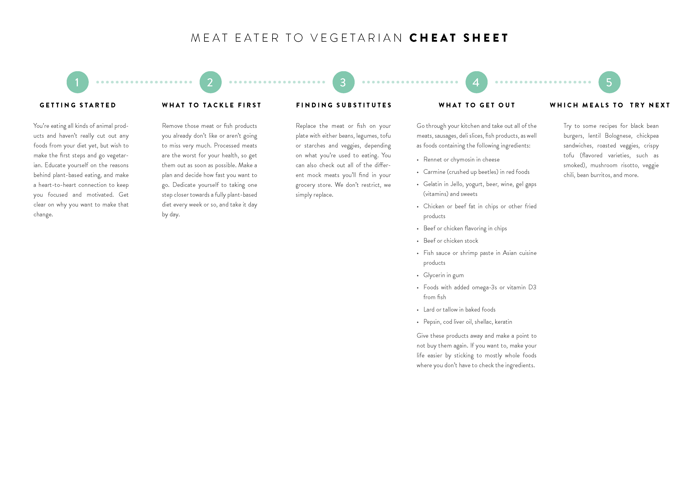
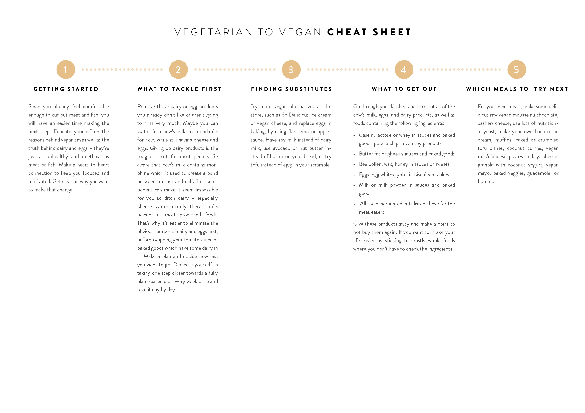
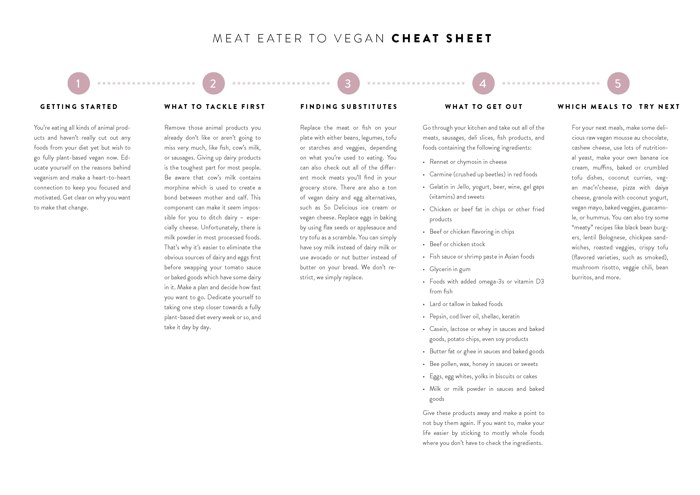

Take the Challenge
The Plant-based Challenge
- Prepare your kitchen
- Rid your cupboard and refrigerator of toxic food additives.
- Meal prep ahead of time.
- Continuously grow your knowledge and understanding of the plant-based lifestyle.
- Prepare your own meals - don‘t eat out! Preparing your own meals is cheapest and gives you full control over all ingredients.
- Embrace whole foods. Whole foods are foods in their purest and healthiest form. Make them your staples.
- Buy in bulk. Aim for family packages or buy in the bulk section. Compare prices by looking at the unit price.
- Prepare simple recipes. Simple recipes don‘t mean you have to miss out on flavor. And they‘re easier on your digestion, too.
- Freeze leftovers. Freeze fruits & veg that are about to go bad and make delicious smoothies or soups later on.
- Do it yourself. Prepare the basics like plant milk, sauces, or spreads yourself instead of buying pre-packaged.
- Buy in season. Food that‘s in season tastes better and is cheaper. Check out this seasonal calendar.
- Buy from the farmers market. Good option to get cheap & seasonal food. Go shortly before the market closes to make bargains.
- Do your research. Find out about current promotions & discounts of nearby supermarkets in newspapers or online.
- Buy smart. Opt for store brands, look down on the shelves to find cheaper products, sign up for your store‘s loyalty program, buy the right quantities so your food doesn‘t spoil, stock up when you find a good deal on one of your staple foods, eat before you go shopping, find coupons in newspaper/online.
- Drink water. Drink water or tea instead of soda. Consider buying a water filter
- Grow your own food. This may be challenging but also very rewarding. “Grow Great Grub” is a good book on the topic.
- Make a plan. Use our templates to make a plan and shopping list to avoid impulsive buying.
No Garlic and Onions
As we grow in our food consciousness, we understand that our consumption of food is not just about taste. Consumption of food is also about our overall well-being on the physical, mental, emotional and spiritual levels.
Both onion and garlic have a physiological and spiritual impact on our well-being. As with everything there are pros and cons, there may not be any dispute that onion and garlic may have some medicinal properties. But overall, they are very toxic to our mental, emotional and physical well-being and as well, distract us from our higher consciousness.
Our consumption of food should be about healing, cleansing and purifying oneself on all levels.
Transition Cheat Sheet
Resource from Nutriously.com
  Newsletter
We invite you to stay connected and learn more about our community. Sign up for our newsletters with plant-based recipes and events delivered to your email!